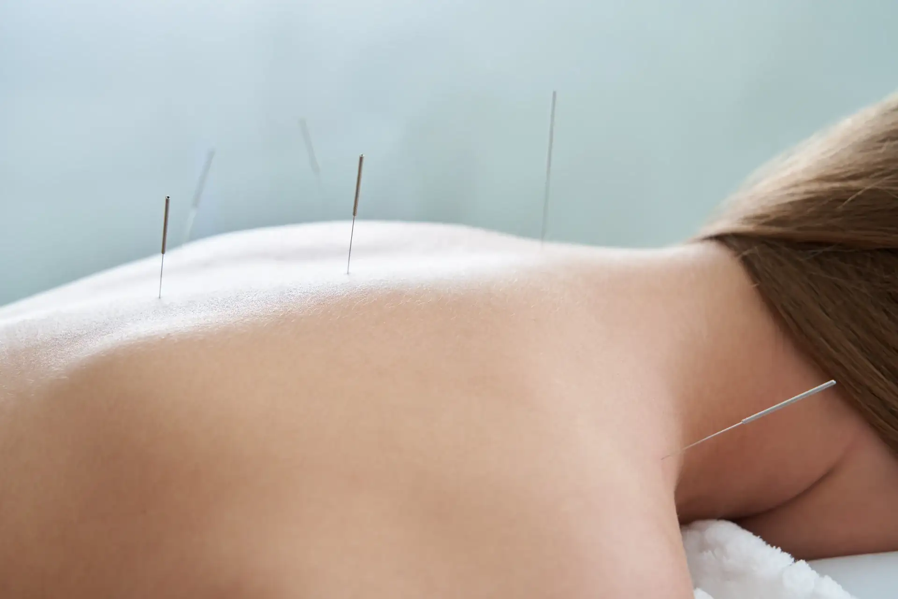

L'acupuncture consiste traditionnellement à l’insertion de fines aiguilles à la surface de la peau en différents points du corps (points d’acupuncture). Cette technique ancestrale de stimulation des points énergétiques permet de rétablir la circulation de notre Énergie Vitale (Qi) à l’intérieur des méridiens (canaux énergétiques). Cela a pour résultat de rééquilibrer l’ensemble de l’énergie du corps et de faire disparaître le symptôme.
Les aiguilles d’acupuncture sont stériles et à usage unique. Elles sont ensuite collectées après utilisation dans un conteneur spécifique à risque infectieux (DASRI).
Domaines d’application
ORL : tendance a tomber malade, rhumes, angine, sinusite…
Douleur : musculaire, articulaire, lombaire, tendinite, céphalée…
Gynécologie : douleur de règles, règles irrégulières ou absence de règles…
Digestif : douleur,diarrhée, constipation…
Psychologie : lassitude mentale, fatigue, dépression, manie, dépression saisonnière, manque de volonté, difficulté de concentration, sommeil perturbé, insomnie…
Dermatologie : acné, psoriasis eczéma…
Déroulement de la première séance
Suite à un entretien détaillé et après l’observation de différents paramètres propre à la MTC (pouls radiaux, langue…) un bilan énergétique sera établi afin de pratiquer les soins personnalisés sur une table de massage.
Des conseils adaptés à votre situation vous serons donnés à la fin de la séance afin de renforcer votre soin énergétique. Plusieurs séances peuvent être nécessaires pour stabiliser l’amélioration obtenue. La fréquence et le nombre de séances dépendrons du trouble et de son ancienneté.
Nous établirons ensemble votre suivi en respectant vos besoins, rythme et disponibilité.